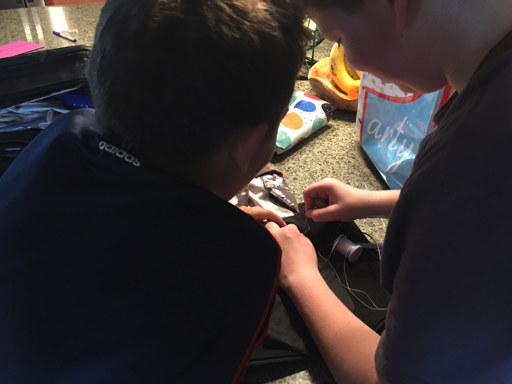
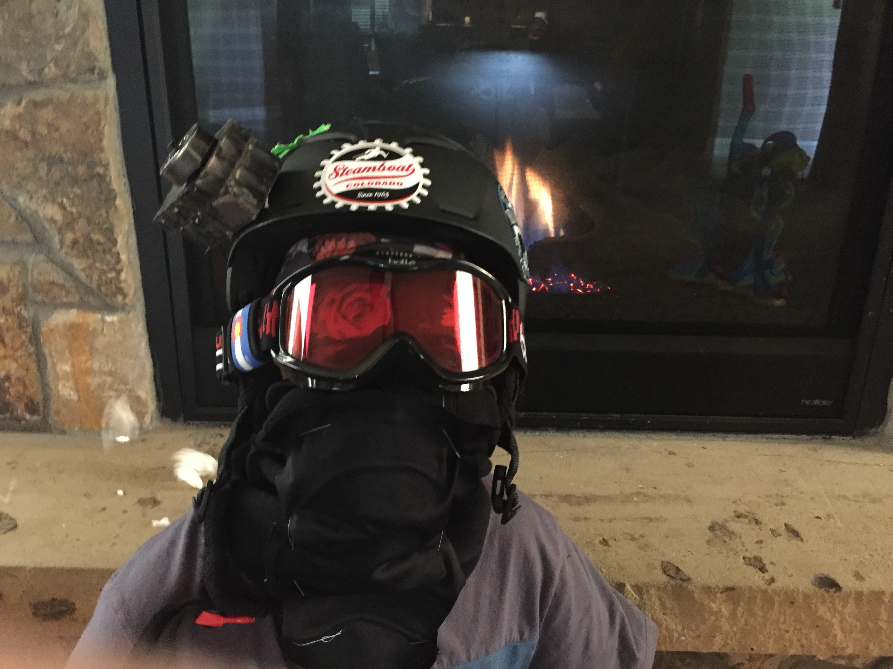

About us
We are a few teenagers that enjoy skiing, and modern technology. Being teenagers, we are on our phones, tablets, computers. All the time! We thought it would be cool to combine modern technology to revamp an old invention that we could use ourselfs. We ended up making this product, The Flaming Face Mask.
Our Purpose
Our goal with the flaming face mask it to improve your day on the slopes. A frozen face can ruin a day of skiing. This has happened before to us, and we hate it. When the chance came along to make a product. We jumped on the idea of skiing. After eliminating other ideas we came up with the flaming face mask, a mix of common products and modern technology